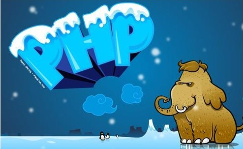
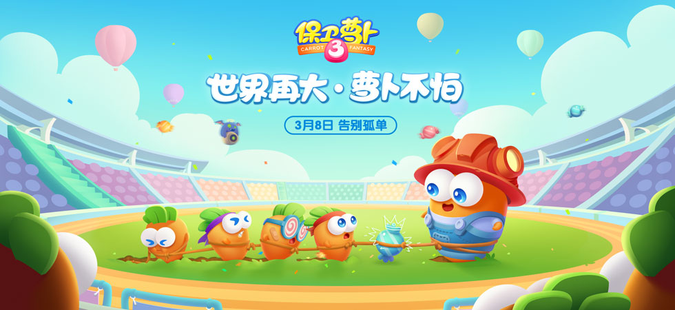

没有尼禄的本事还想泡茱莉亚一样的妞？
知道我写这个东西用的是什么编辑器吗？对，sublime
不善言辞，不喜表达，却又不想无趣。博客应该有什么内容？在这个博客早已落寞的年代。现在互联网上最热门的是什么内容？只知道贴吧人多，天涯、猫扑有人灌水，头条访问量高，慕课的人气也经久不衰。还有呢？互联网辣么庞大，除去所谓的暗网，也有数以万计的站点散布在网络上，我们能够看到的网站入口却寥寥无几。
优酷？爱奇艺？还是英雄联盟？人生似乎有点boring。网络世界很繁华，却不止一次感受到它的冷漠。
敲键盘的手承载不起按吉他和弦的强度。
这段时间唯一的长进也就打字速度稍微能看了一点，却在打这段汉字的时候，发现根本毫无暖用。也就一两个月没怎么碰吉他，十分钟就开始手疼了。sublime不折不扣是一个灰常给力的编辑器，小巧轻便，功能丰富，界面上也可以甩notepad几条街，边角圆滑，还有平滑的过度动画。可惜是用Python开发的。
为什么可惜呢？因为不会啊！有人比喻，Java是重剑，PHP是轻剑，Python是匕首。要怎么用，看用来干什么。java除了完全面向对象，语法上和js还是稍微有点像的，都用+作为连接符。也就是说，能看得懂。不熟练，但也不能说生疏。就像在学过C之后看了看C++的基础课程，发现并没有多么变态。可Python的dict和map就有点无解了，想学，就要花时间去弄清楚一些新概念。
对于新生猿来说，花点时间确实没啥？是的。曾经以为echo和include就可以做很多事情，直到后来用了GD库，听到了tpl，还有MVC构架，和smarty模板、tp框架、yii框架，7.0的新特性、mysqli，设计模式，微信开发，等等等等N多内容需要学习甚至精通。Python？我真的还想再活五百年。（H5和CSS3呢？Js呢？提都不提，你多伤它们的心）

人生就像保卫萝卜，没钱，你的萝卜就会被怪吃掉。不管是跑得飞快体积娇小的小黄怪，还是身高体宽，虎背熊腰的大黑怪，都能咬你几口。
就萝卜本身而言，3的难度比2高了不止一个难度。高难度的情况下有哪些方法可以通关呢？
1.提高自身实力。萝卜的生命也好，技能也好，炮塔也好，肯定越厉害就真的越厉害。如果一个人就是一根萝卜，炮塔就是萝卜的各项技能，炮塔越多，炮塔等级越高，怪就越渺小。多，指知识范围广，等级高，指学术精。只多不行，伤害低人家怪防得住。只有一个炮塔也不行，攻击再高人家躲过那一段就没事。单个炮塔放满屏幕？一招吃遍天下的伎俩，够你一时猖狂，不够你一生保命。
2.换装。萝卜也是有等级的，也是有服装的。等级？就是身价咯，得用角色碎片来进阶，不止是金钱就可以买到的。服装？就是装13呗。装的好，就能把小怪给唬住喽。
3.好友助阵。可以提高炮塔的攻击力，不同等级的好友增益不同，不言而喻，看你朋友的身价。不过当然，次数多了就要花金币才能让人家帮助你，等级高的还得用钻石。
4.没了，就这么没了。真的没有其他方法了吗？你还有颠覆你人生更好的方法吗？
<<<（2016.9.8）
保卫萝卜告诉我们，
1.不要怕输，输了可以再来，怕输连开始都难。面对不进则退的晋升关卡，勇敢地打。
2.后期新出的炮塔不一定就越好，集市主题第一关的船锚炸弹也就如此，用起来可能还不如飞机，所以告诉我什么是爱情？
3.顶级炮塔的攻击速度和攻击力远超降一级的炮塔，性价比更高。学艺要学精？低级炮塔多不见得比少数几个顶级炮塔有气场。不过在糖果赛中炮塔等级高，损失的也就多。学PHP再精通，人家企业就要Python的，奈何？此题无解。
（2016.9.8）;

想写博客不容易。毕竟看多了水到发慌的数不胜数的个人博客，或者为盈利而生的商业博客。
技术博客？啥也不会啊！技术圈有大波大波的大神在写博客，技术到什么程度？到很多人看不懂的程度。甚至出现的名词都没听过。
生活博客？生活比看时间简史还要枯燥。
没有尼禄的本事还想泡茱莉亚一样的妞？是不是稍微有点跳。对，Devil May Cry 4，就是鬼泣4...
是我老了吗？接受不了新鲜事物了吗？玩的游戏还是08年的鬼泣4，和孢子，听的歌，也是前几年，很多年前的歌，筷子兄弟的你一定会成功算不算？
不会写小说，写不下去，时间成本大。其实我还想再活六百年。

单纯闲的发发牢骚。你想不想再多活几年？